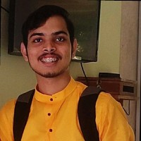
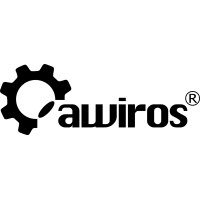
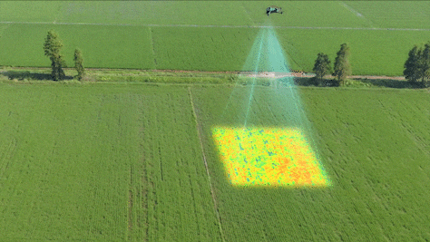
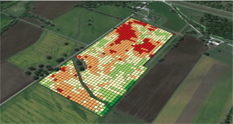
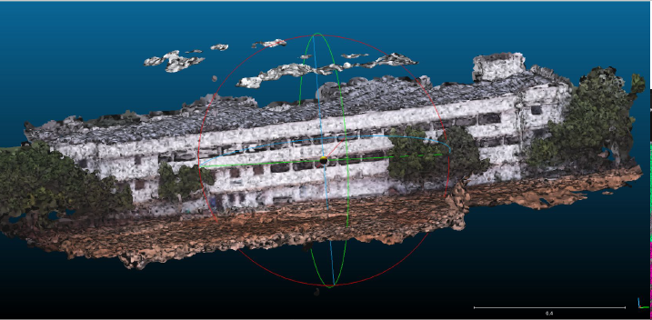
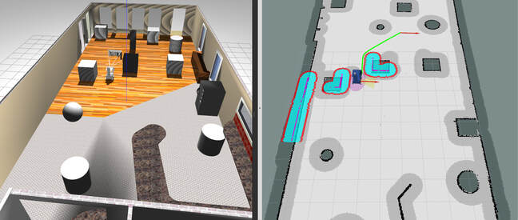

Yuvraj Borade
computer vision, mobile robotics
I'm a Computer Vision Engineer at Awidit Systems (Awiros), building and deploying real-time CV systems across large-scale camera networks.
Previously, I was a research intern with Prof. K. Harikumar at the Robotics Research Center, IIIT Hyderabad, working on drone-based infrastructure assessment with multi-sensor fusion.
I hold a Bachelor's in Electronics and Communication Engineering from Visvesvaraya National Institute of Technology (VNIT), India. During my time there I was part of IvLabs, the AI and Robotics lab of VNIT, where I developed many of my research interests under the guidance of Prof. Shital Chiddarwar.
Interested in robot perception, autonomous navigation, multi-sensor fusion, and 3D scene understanding for robots in real-world environments.

Experience

Research

Selected Projects


